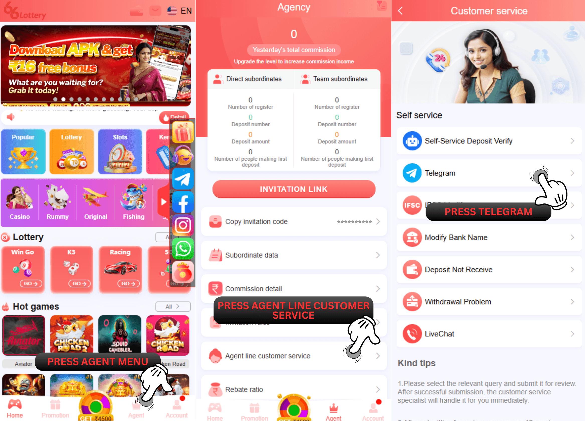

66 Lottery सुपीरियर एजेंट से कैसे संपर्क करें
सुपीरियर एजेंट संपर्क कैसे खोजें?
1. "एजेंट" मेनू पर जाएं।
2. "एजेंट लाइन कस्टमर सर्विस" पर क्लिक करें।
3. "टेलीग्राम" बटन पर क्लिक करें।
4. "66 Lottery ऑफिशियल एजेंट कॉन्टैक्ट" पर क्लिक करें।
जब आप पहले ही बातचीत कर लेंगे और आपके सामने आने वाली समस्या के बारे में सूचित कर देंगे, तो वरिष्ठ एजेंट सामान्य एजेंट को बताएगा और सामान्य एजेंट आपसे संपर्क करेगा और आपकी समस्या को हल करने में मदद करेगा।
